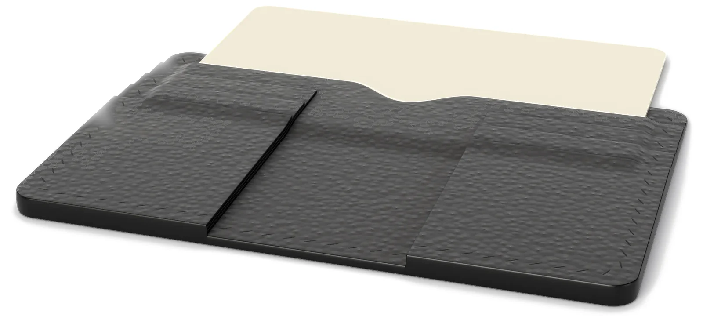
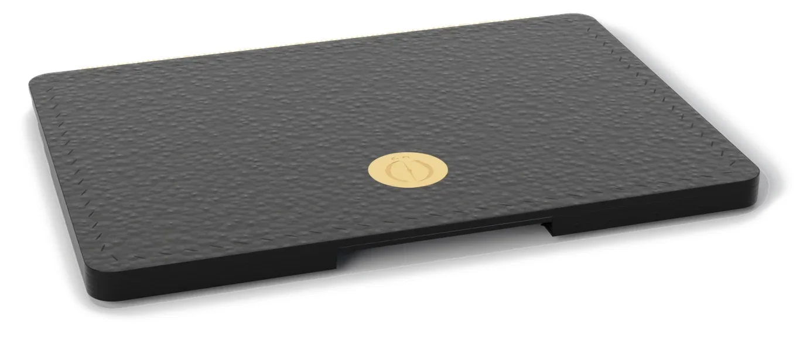
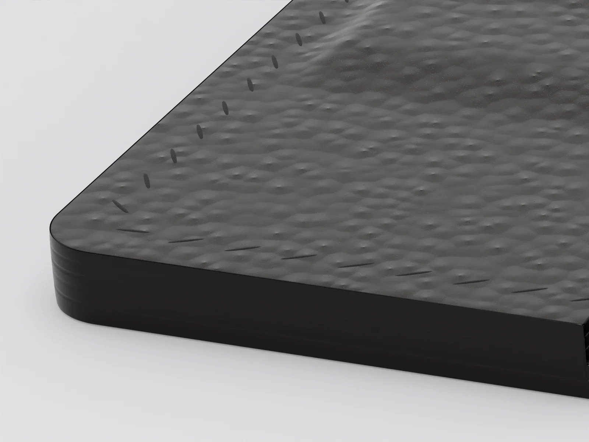
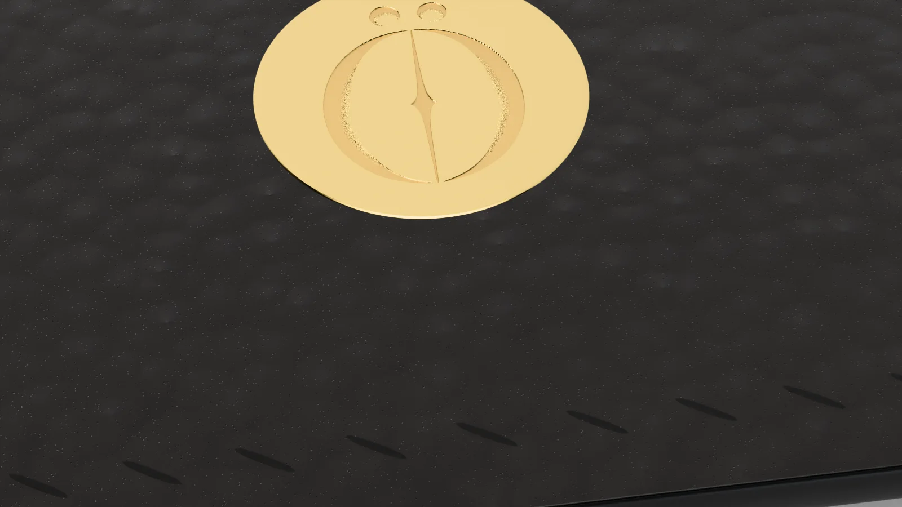
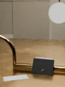

STAND-IN · img/obolo/front/master.* (departments/apparel/new-pieces-2026-11/build/card-holder/site/card_holder_front_16k.png; 16K, 15360 × 8640)
STAND-IN · img/obolo/back/master.* (back view, 8K; 8K, 7680 × 4320)
STAND-IN · img/obolo/detail-edge/master.* (the painted edge, 8K close-up; 8K, 7680 × 4320) STAND-IN · img/obolo/detail-disc/master.* (the disc, 8K close-up; 8K, 7680 × 4320)
STAND-IN · img/obolo/detail-disc/master.* (the disc, 8K close-up; 8K, 7680 × 4320)
STAND-IN · img/obolo/detail-material/master.* (the pebble, 8K close-up; 8K, 7680 × 4320)Chapter I · Accessories
Öbolo
Card holder
Made to live in a coat pocket. Black calfskin in the house's fine pebble, three slots a side, and the brass disc with the Ö on its back.
- LEATHER
- BLACK CALFSKIN, FINE MATTE PEBBLE
- SLOTS
- THREE A SIDE, A CENTRE POCKET
- DISC
- BRASS, THE Ö ENGRAVED
Price on request
ReserveMade to order. Delivery date confirmed by email.
Delivered in the house box.
Details
- Made to order
- Made to order. We email your delivery date once production is confirmed. Cancel for a full refund any time before production starts.
- Returns
- Exchanges within 14 days of delivery, unused and with tags. Returns
- Care
- Wipe with a soft dry cloth. Keep from rain and heat; if it gets wet, let it dry slowly away from a radiator. Store in its dust bag, stuffed with tissue, out of the light. Leather cleaning by a specialist only. Care
- Size
- The measurements

STAND-IN · img/obolo/world/master.* (C5: the last frame, the world plate (the box office); 8K, 5760 × 7680)Where it is going · C5
The box office
One ticket on the counter.
On the screen in the film, the picture is tomorrow: each piece in the place it is going, with one place kept for someone.
The maker’s notes
Öbolo, the card holder
- It begins as layers of black calfskin: a 1.0 mm back, a 0.7 mm pocket face, three 0.6 mm slots a side.
- It measures 100 by 70 mm, with corners rounded at 4 mm.
- The slot mouths step down at 55, 48 and 41 mm.
- It is stitched 3.0 mm in, a stitch every 3.5 mm, and the layers are painted as one edge.
- On the back, a 12 mm brass disc is set flush, the mark engraved 8.9 mm tall.
Inside it: a centre pocket, open along the top, with a thumb notch 24 mm wide and 6 mm deep.
Read the poem